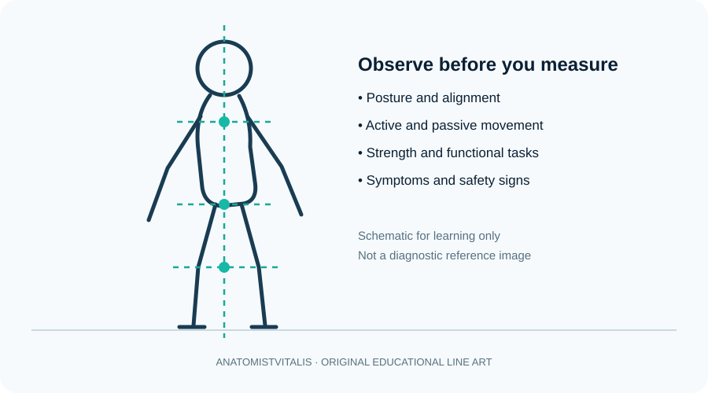

Physiotherapy assessment: history, examination and outcome measures
Learn how physiotherapists gather history, examine movement and function, and track outcomes safely.

Introduction to assessment
Physiotherapy assessment is a structured process for understanding a person's symptoms, movement, functional limitations, goals and safety needs. It is not a checklist performed identically on every patient. The history and initial findings guide the choice of examination procedures.
1. Subjective assessment
The interview explores the main concern, onset and behaviour of symptoms, aggravating and easing factors, previous episodes, medical and surgical history, medication, activity level, work or sport demands, sleep, relevant psychosocial factors and the person's own goals. Consent, privacy, clear communication and culturally respectful practice are essential.
Screen for warning signs such as major trauma, unexplained systemic symptoms, progressive neurological deficit, suspected vascular compromise or other features requiring urgent referral. The significance of any finding depends on context and professional guidance.
2. Objective examination
- Observation: posture, swelling, skin changes, movement strategy and use of aids.
- Movement: active and passive range of motion, movement quality and symptom response.
- Strength and performance: appropriately selected muscle tests, functional tasks, balance, gait or exercise tolerance.
- Neurological examination: sensation, power, reflexes, coordination or other tests when indicated.
- Special tests: use only when the clinical question and evidence justify them; a single test rarely confirms a diagnosis alone.
3. Baseline measures and clinical reasoning
Record measurable baseline findings so change can be reviewed. Depending on the problem, measures may include pain rating, joint range, walking speed, timed functional tasks, strength, balance, respiratory measures or a validated patient-reported outcome scale. Choose tools appropriate to the patient and interpret results alongside the full clinical picture.
Clinical reasoning links the history and examination to a working hypothesis, identifies modifiable factors, considers risks and alternatives, and determines whether treatment or referral is appropriate. Explain findings in plain language and agree on meaningful goals.
Clinical connection
For a person reporting dizziness and unsteadiness, an assessment may need to consider falls risk, medication, neurological signs, vestibular symptoms and cardiovascular causes. Do not proceed with routine balance exercises if the presentation suggests an urgent medical problem.
Further study
Use this lesson as a foundation and consult current professional guidance, validated assessment resources and relevant research for clinical decisions. Clinical practice must follow local professional standards and individual patient needs.
Check your understanding
- Why should subjective history precede many physical examination tests?
Reveal answer
It clarifies the presenting problem, red flags, precautions, goals and hypotheses that guide safe selection of objective tests.
- What is the difference between sensitivity and specificity in a clinical test?
Reveal answer
Sensitivity describes how often a test is positive among people with the condition; specificity describes how often it is negative among people without the condition.
- Why should a test result not be interpreted in isolation?
Reveal answer
Pre-test probability, measurement reliability, clinical context and the rest of the assessment affect its meaning.
Learning objectives
- Distinguish subjective history from objective examination.
- Organise assessment around the person's goals, function, relevant systems review and red flags.
- Describe how to document baseline findings and choose repeatable outcome measures.
- Explain why consent, privacy, infection prevention and clear communication are essential throughout assessment.
Structured assessment sequence
Begin with consent and the patient's main concern, then explore symptom behaviour, relevant medical history, medications, function and personal goals. Screen for red flags before proceeding. Choose objective tests that answer a clinical question, record the method and baseline, interpret results in context and agree a plan with the patient. A test result alone rarely establishes a diagnosis.
Further reading
World Physiotherapy for professional standards and NICE for condition-specific assessment recommendations.